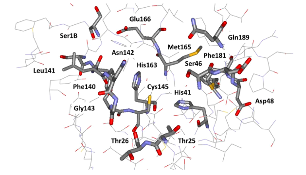
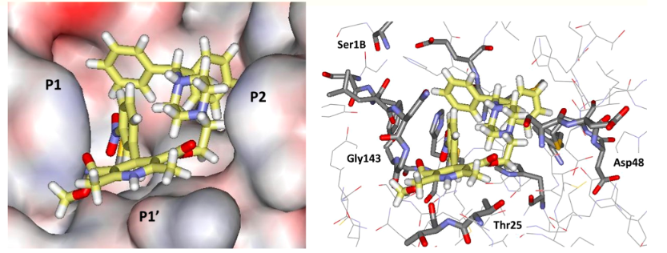

Introduction
This paper outlines the use of computational chemistry methods to identify approved drugs that display an inhibitory effect against the main protease of SARS-CoV-2. This process is known as drug repurposing but is also termed as drug repositioning or therapeutic switching. This approach is used to identify novel therapeutic agents from a pool of existing FDA approved drug molecules. This approach is highly relevant as the drug discovery process is expensive, time-consuming, and financially risky. Thus, drug repositioning is employed to increase the success rate of drug development by offering numerous advantages relative to tradition drug discovery processes. These include a substantial reduction in the duration of the drug development process, lower-cost and higher efficiency and a significantly lower risk of failure[1]. The COVID-19 global pandemic highlighted an urgent need to develop effective therapeutic agents in a much shorter timeframe than traditional drug discovery processes allow for, thus drug repositioning efforts have been explored thoroughly as part of the effort to identify drug molecules for the treatment of COVID-19[1]. One of the predominant strategies used in drug-repurposing approaches is the use of computational methods such as molecular docking or molecular similarity. Computational methods follow along with the benefits of drug-repurposing approaches in that they allow for a time and cost efficient approach to identifying bioactive molecules to be examined for potential use as pharmacological agents[2].
SARS-COV-2 has two proteases: chymotrypsin-like cysteine and main protease[3]. These enzymes are responsible for processing polyproteins which have been translated from viral RNA[3]. Inhibition of these proteases would result in an impediment of viral replication thereby resulting in a therapeutic effect[3]. It is also of note that no human proteases are known to share a similar cleavage specificity thus this inhibitory effect is unlikely to induce a toxic effect[3].
The rise of Omicron subvariants that carry mutations in their spike proteins leads to concerns regarding the efficacy of neutralising antibodies and correspondingly the efficacy of existing vaccines and therapeutic treatments[4]. Thus, the need for novel and efficacious chemotherapeutic treatments is clearly apparent. Drug repurposing efforts powered by computational chemistry methods (virtual screening/docking studies) provides a systematic path for ongoing drug discovery efforts to develop therapies effective against SARS-COV-2.
Design
The authors began by applying a consensus molecular docking protocol to scan a virtual library of approved drugs (around 2000 drugs). A high-resolution crystal structure of main protease (Figure 1) that was co-crystallized with a non-covalent small fragment hit was used as the basis ligand of this docking study[5]. This decision was made as the presence of a ligand within this crystal structure would most likely alter the conformation of the active site side chain residues in a manner that would be better for the performance of molecular docking. The molecular docking protocol of this study included four independent trials of protein-ligand docking. The docking programs Glide SP, AutoDock Vina and AutoDock 4.2 were utilised, with AutoDock 4.2 being used for two of the protocols[3]. Following this, a ranking of the compounds in order of their docking scores was conducted and the top 200 hits from each docking trial were compared. From these hits compounds that were in the top 200 in all four or at least three of the trials were selected to proceed to the next stage of the experiment. This docking protocol narrowed the library down to 42 candidates which were then extensively analyzed with respect to conformation, stability in molecular dynamics simulations and consideration of intermolecular contacts. This further narrowed down the candidates to 17, which were then examined via kinetic assays for inhibition of mPRO.

Computational Methods
Virtual screening is a computational approach for predicting potentially bioactive compounds when scanning a library of small molecules [2]. The authors of this paper utilised this approach in an attempt to discover small molecule inhibitors of main protease (mPRO)[3] . They utilised a form of virtual screening that is receptor based, specifically they used protein-ligand docking in order to identify drug molecules that had a potential inhibitory effect on mPRO [5].
This technique utilises a crystallised structure of a protein in order to predict how the compounds within the virtual library would bind to the binding site of a protein[2]. With this, they analysed more than 50 crystal structures of main protease in both apo and holo forms to select a structure that would perform optimally in a molecular docking study. Ultimately selecting a holo crystallised structure of the SARS-CoV-2 main protease as it was determined that the presence of a ligand bound to the crystal structure would position the active site residues in such a manner that would be conducive to optimal performance of the molecular docking study[3].
As part of this technique, the protein used for the basis of docking must be prepared. As this is an experimentally obtained structure, there will be aberrations that must be corrected to ensure optimal performance of the docking protocol [6]. X-ray crystallographic protein structures have common issues such as missing hydrogen atoms, missing residues, incomplete sidechains, undefined protonation states and/or presence of crystallization products that are not found in reality[2]. In order to mitigate these issues the authors of this paper utilised the program, Reduce, on the crystal structure in order to perform alterations such as side-chain flips, optimisation of hydrogen bonds and the addition or removal of hydrogen bonds[7]. To validate that this structure was chemically sound, a further program, UCSF Chimera, was used to visually analyse the structure [[5]][8]. The next stage of the virtual screening protocol was docking. Generally, docking programs generate an initial set of conformational, tautomeric and protonation states for each of the ligand compounds[5]. Then, researchers can apply a search algorithm and scoring function to generate and score the poses of the ligand within the binding site of the receptor in an effort to identify the docked pose that likely represents the real binding mode of the compound [[9]][5]. Researchers have the autonomy to introduce constraints to these processes to assist these protocols in producing results that make chemical sense. For instance, the cavity of the protein in which compounds can be docked is commonly constrained in order to limit the space that can be occupied by docked poses [10]. Additionally, constraints regarding the specific binding modes of the docked poses can be implemented to limit the conformational space the search algorithm can select docked poses from[11].

The authors of this paper ran four independent docking protocols within this study using Glide SP, AutoDock Vina and two protocols utilising AutoDock 4.2[5]. The Glide software package utilises a set of hierarchical filters to search for probable locations of the ligand within the binding site region of the receptor [13]. The receptors shape and properties are represented using a grid via the use of varying sets of fields that yield a progressively more accurate scoring of the ligand pose[13]. Here, the creators of the Glide software package define the term ‘pose’ to refer to a complete specification of the ligand in terms of its position and orientation in space relative to the receptor, including its core and rotamer group conformations [13]. Following the field generation, generation of initial ligand conformations is performed. This set of conformations are selected from a listing of the minima energy structures within the ligand dihedral angle space [13]. Utilising these generated conformations, an initial screening procedure is performed to identify promising poses, this pre-screening step reduces the region where more computationally expensive evaluations are performed thereby allowing for acceptable computational speed[13]. Beginning with the promising poses identified from this initial screening, the ligands are the minimised within the field of the receptor via the use of a standard molecular mechanics energy function in order to select for a smaller sub-selection of low energy poses [13]. To finally predict the binding affinity and order the screened ligands, a combination of ‘GlideScore’, the ligand-receptor molecular mechanics energy and the ligand strain energy is utilised in order to identify correctly docked poses [13].